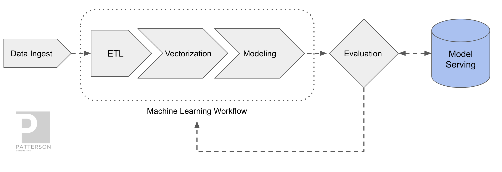

Deploying a HuggingFace NLP Model with KFServing
Author: Josh Patterson
In this example we demonstrate how to take a Hugging Face example from:
https://huggingface.co/transformers/usage.html
and modifying the pre-trained model to run as a KFServing hosted model. The specific example we'll is the extractive question answering model from the Hugging Face transformer library. This model extracts answers from a text given a question.
What is HuggingFace?
Hugging Face is a leading NLP-Focused startup with more than a thousand companies using their open-source libraries (specifically noted: the Transformers library) in production. The python-based Transformer library exposes APIs to quickly use NLP architectures such as:
- BERT (Google, 2018)
- RoBERTa (Facebook, 2019, pdf)
- GPT-2 (openAI, 2019)
- DistilBERT (Hugging Face, 2019)
- information extraction
- text classification
- question answer
- summarization
- text generation
transformers package in our python environment with a command such as:
pip install transformersThe included examples in the Hugging Face repositories leverage auto-models, which are classes that instantiate a model according to a given checkpoint. These checkpoints are generally pre-trained on a large corpus of data and fine-tuned for a specific task.
This example uses the stock extractive question answering model from the Hugging Face transformer library. Some questions will work better than others given what kind of training data was used. The reader is free to further fine-tune the Hugging Face transformer question answer models to work better for their specific type of corpus of data.
What is KFServing?
KFServing (covered previously in our Applied ML Methods and Tools 2020 report) was designed so that model serving could be operated in a standardized way across frameworks right out-of-the-box. There was a need for a model serving system, that could easily run on existing Kubernetes and Istio stacks and also provide model explainability, inference graph operations, and other model management functions. Kubeflow needed a way to allow both data scientists and DevOps / MLOps teams to collaborate from model production to modern production model deployment. KFServing functionally sits in the "Model Serving" box in the figure below.
KFServing’s core value can be expressed as:
- helps standardizing model serving across orgs w unified data plane and pre-built model servers
- single way to deploy, monitor inference services / server, and scale inference workload
- dramatically shortens time for data scientist to deploy model to production
The project description from their open source github repository:
"KFServing provides a Kubernetes Custom Resource Definition for serving machine learning (ML) models on arbitrary frameworks. It aims to solve production model serving use cases by providing performant, high abstraction interfaces for common ML frameworks like Tensorflow, XGBoost, ScikitLearn, PyTorch, and ONNX. "
Other core features include:
- Pre/Post Custom Transforms
- Outlier Detection
- Canarying
- Concept Drift Detection
- Native Kubernetes Framework
Setting Up KFServing
To demo the Hugging Face model on KFServing we'll use the local quick install method on a minikube kubernetes cluster. The standalone “quick install” installs Istio and KNative for us without having to install all of Kubeflow and the extra components that tend to slow down local demo installs.
To install KFServing standalone on minikube we will first need to install the dependencies:
- kustomize v3.5.4+
- kubectl
- helm 3
Kubeflow will deploy a lot of pods on our local Kubernetes cluster in minikube and your machine may experience some sluggishness. Two settings that help are adjusting memory and ram for the Hypervisor being used by Minikube. Suggested settings to update before you start your minikube cluster:
minikube config set memory 12288
minikube config set cpus 4Once you have your local minikube installation completed, run the following commands:
minikube start
minikube statusThe second command should give us the output below if our cluster is healthy:
Install KFServing on Minikube
First we need to get a copy of the KFServing repository on our local system. Assum‐
ing the reader has git installed, we can do this with the git clone command:
git clone git@github.com:kubeflow/kfserving.git
This will copy the latest version of kfserving on our local machine so we can install it on our minikube kubernetes local cluster. Once we have the code locally, change into the kfserving directory and run the quick_install.sh command as shown below.
cd kfserving
./hack/quick_install.shThis will install KFServing along with its core dependencies such as Knative Serving all with the same install script. This install takes around 30-60 seconds, depending on your system. Note: sometimes the installer will fail because a component still has not completely installed, just run the installer a second time if you see the failure console logs.
Once our install is complete, we can confirm that the kfserving install is working on our minikube cluster with the command.
kubectl get po -n kfserving-systemThis command should give us output that looks like the console output below.
Deploying the Custom HuggingFace Model Server on KFServing
There are two main ways to deploy a model as an InferenceService on KFServing:
- deploy the saved model with a pre-built model server on a pre-existing image
- deploy a saved model already wrapped in a pre-existing container as a custom
Most of the time we want to deploy on a pre-built model server as this will create the least amount of work for our engineering team.
There are many pre-built model servers included with KFServing out of the box. With KFServing our built-in model server options are:
- tensorflow
- sklearn
- pytorch
- onnx
- tensorrt
- xgboost
- model built with different dependency versions than model server
- model not saved in file format model server expects
- model was built with a new/custom framework not yet supported by KFServing
- model is in container image that has a REST interface that is different than the Tensorflow V1 HTTP API that KFServing expects
For any of the cases above we have 3 options for deploying our model:
- wrap our custom model in our own container where our container runs its own webserver to expose the model endpoint
- use the KFServing KFServer as the webserver (with its standard Tensorflow V1 API) and then overload the load() and predict() methods
- deploy a pre-built container image with a custom REST API, bypassing
InferenceServiceand sending the HTTP request directly to the predictor
Given that Hugging Face has a unique python API and a lot of dependencies, it does not work on KFServing out of the box. In this case we need to do 2 key tasks:
- create a new python class that inherits from KFModel, with custom methods for
load()andpredict() - build a custom container image and then store it in a container repository
The remainder of this post will be focused on:
- Building a custom KFModel python
kfserving.KFModelwith the Hugging Face QA model wired in - Building a docker container with the custom python
kfserving.KFModel - Push the docker container to docker hub
- Deploy the custom
InferenceServiceto our minikube kubernetes cluster
InferenceService on KFServing.
Building a Custom Python Model Server
In the code listing below we can see our custom KFModel with the Hugging Face code wired into the load() and predict() methods.
There are two things happening in the above code with respect to integrating with the model server:
- The Hugging Face QA model is loaded in the load(...) method
- The
predict(...)method takes incoming inference input from the REST call and passes them to the Hugging FaceTFAutoModelForQuestionAnsweringmodel instance
The Hugging Face model we're using here is the "bert-large-uncased-whole-word-masking-finetuned-squad". This model and associated tokenizer are loaded from pre-trained model checkpoints included in the Hugging Face framework.
When the inference input comes in across the network the input is fed to the predict(...) method. There can be multiple questions in the input json (shown further below).
A stock KFServing model server "speaks" the TF REST API (reference). In the case that we control the parsing of the input json from the REST call (as we do in the above example), we have the flexibility in what we can send the server from the client side. In the above example we're sending instance pairs of a text passage and then n number of questions to query the associated text passage for answers.
For each question we send as part of the json input the code our predict() method builds a sequence from the text and the current question with the correct model-specific separators token type ids and attention masks. Next the code passes this generated sequence to the model for inference. The output of the model inference is a range of scores across the entire sequende tokens (e.g., "questions and text") for both the start and end positions.
Then the code computes the softmax of the inference output to get the probabilities over the tokens. Finally our code fetches the tokens from the identified start and stop values and converts those tokens into a string. This string is encoded in the results map with the question as the key in the map. These question answer pairs are returned to the client across the network as the response to complete the inference request.
Now that we have the code to host our custom model server as an InferenceService on KFServing, let's turn our attention to building this code as a container.
Building a New Docker Image for the Model Server
Once our model serving code above is saved locally, we will build a new docker con‐ tainer image with the code packaged inside. We can see examples of the container build command and the container repository store command (here, docker hub) below.
Build the new container with our custom code and then send it over to the container repository of your choice:
# Build the container on your local machine
docker build -t {username}/kfserving-custom-model ./model-server
# Push the container to docker registry
docker push {username}/kfserving-custom-modelFor those that would prefer to use a pre-built version of this container and skip the coding + docker steps, just use our container up on docker hub:
https://hub.docker.com/repository/docker/pattersonconsulting/kfserving-huggingface-bert-qa
Now let's move on to deploying our model server in our container as an InferenceService on KFServing.
Deploying Custom Model Server on KFServing with kubectl
Given that KFServing treats models as infrastructure, we deploy a model on KFServing with a yaml file to describe the kubernetes model resource (e.g., InferenceService) as a custom object. The code listing below shows our yaml file to create our custom InferenceService object on the local kubernetes cluster.
We need to set four parameters to uniquely identify the model, such as:
- apiVersion: “serving.kubeflow.org/v1alpha2”
- kind: “InferenceService”
- metadata.name: [the model’s unique name inside the namespace]
- metadata.namespace: [the namespace your model will live in]
kfserving-custom-model as our metadata.name and our model will be created in the default namespace.
Beyond the metadata of our object, the spec of our object has a lot of options, but we'll cover a few specfic ones here. The default field is the part of the InferenceService that specifies which endpoint that will deploy the model (alternatively we could specific canary here). Inside the default spec we define the predictor object and then the required fields to define a custom serving container.
Towards the end of the spec we ask kubernetes to schedule our container wtih 4GB of ram as Hugging Face tends to take up a lot of space in memory.
Once we have our yaml file configured we can create the Kubernetes object with Kubectl as shown below.
kubectl apply -f custom.yaml
Once we run the above kubectl command, we should have a working InferenceService running on our local kubernetes cluster.
We can check the status of our model with the kubectl command:
kubectl get inferenceservicesThis should give us output as shown below.
Deploying a custom model on KFServing is not as easy as using a pre-built model server, but its not terrible either as we've seen so far.
Making an Inference Call with the KFServing-Hosted HuggingFace Model
Now let's make an inference call to our locally hosted Hugging Face QA model on KFServing. First we need to do some port forwarding work so our model's port is exposed to our local system with the command:
kubectl port-forward --namespace istio-system $(kubectl get pod --namespace istio-system --selector="app=istio-ingressgateway" --output jsonpath='{.items[0].metadata.name}') 8080:80Then we'll create some text and questions in json format as seen below to send as input.
Using the above input, we'll use the curl command to send the json file as input to the predict method on our custom Hugging Face InferenceService on KFServing with the command:
curl -v -H "Host: kfserving-custom-model.default.example.com" http://localhost:8080/v1/models/kfserving-custom-model:predict -d @./qa_bert_input.jsonThe response will look like:
This example has shown how to take a non-trivial NLP model and host it as a custom InferenceService on KFServing. If you'd like to try this at home, take a look at the example files on our company github repository at:
https://github.com/jpatanooga/kubeflow_ops_book_dev/tree/master/kfserving/custom_model_servers/extractive_question_answer
If you'd like to know more about Kubeflow and KFServing, please check out the project homepage, contact us, or check out our upcoming book with Oreilly on "Kubeflow Operations".